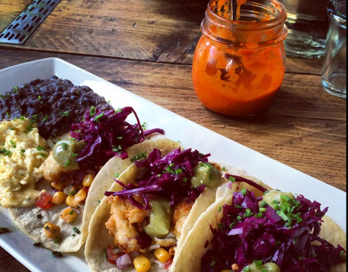
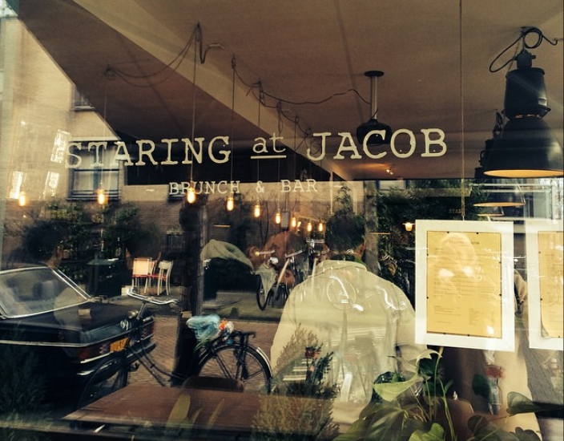

Staring at Jacob
Located in Amsterdam Oud-West, this brunch place serves delicious and hearty Western American-style breakfast meals from large pancakes to barbecue chicken, various omelettes and meat dishes - definitely a place to visit if you have large appetite in the morning and are sick of small portions offered at many places in Amsterdam :) - the place is even run by an American chef. Staring at Jacob offers a great, warm vibe as well as a nice location along the canal. Please be aware that the service might be a bit slow, but the wait is definitely worth it and you will not leave this place with feelings of guilt. Please make sure to come on time as spots fill up very quickly on Saturdays and Sundays!
Address: Jacob van Lennepkade 215, 1054 ZP Amsterdam
Phone: +31 (0) 20 223 7498
Opening Hours: Monday: 11-17h; Tuesday: Closed; Wednesday: Closed; Thursday: 11-17h, Friday: 11-17h, Saturday: 11-17h, Sunday: 10-17h
Menu: Click here
Website: Click here
-

- 
- 